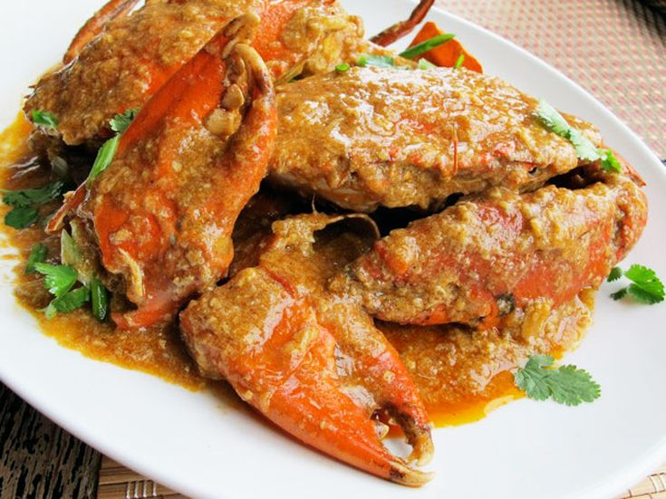
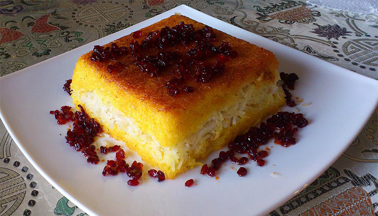
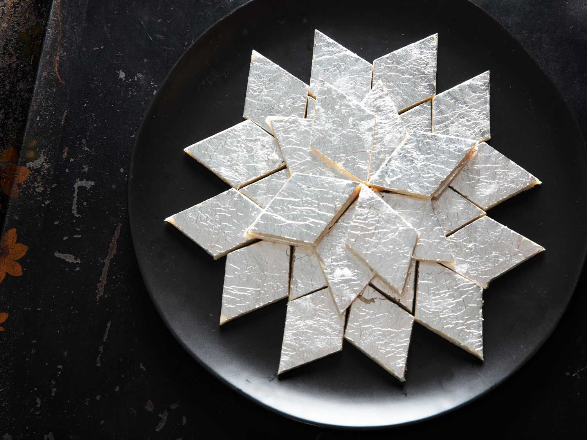
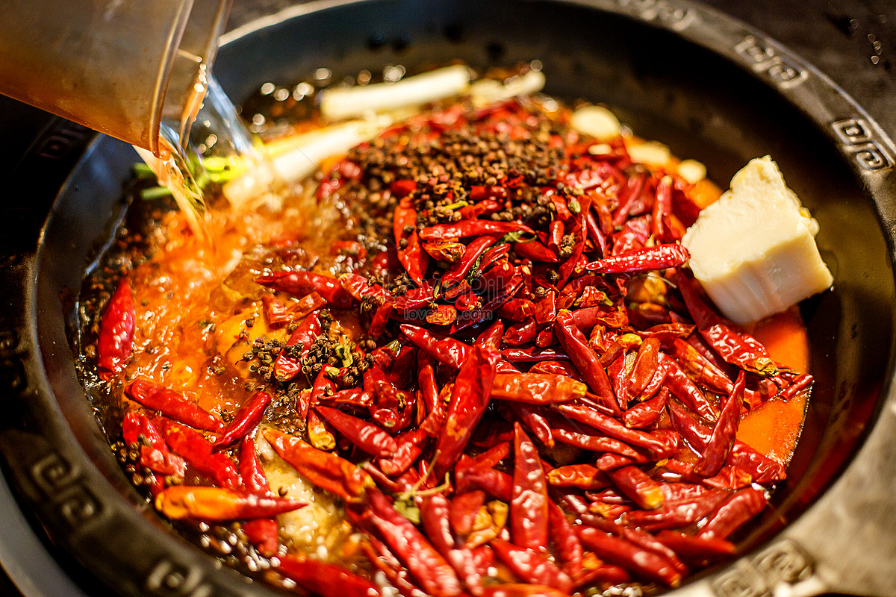

De beste gerechten van Azië!
Chilli krab (Singapore)
-
Roergebakken krab in een tomaat gebaseerde, zoete, hartige en licht pikante chilisaus. De populaire krab in Singapore is de modderkrab, maar er zijn allerlei soorten en maten. Hoewel de chilikrab de laatste tijd aan glans heeft ingeboet, zal deze krab altijd een must zijn om te eten als je in Singapore bent.
- 
Tahchin (Iran)
-
De beroemde Iraanse tahchin is een hartige rijstdelicatesse die lijkt op een cake of een ovenschotel. Het gerecht wordt gemaakt van voorgekookte rijst die wordt gekruid met saffraan, in lagen in een pan wordt gelegd en vervolgens wordt gebakken. Na het bakken wordt de rijstovenschotel omgedraaid en in stukken gesneden. Het gerecht wordt meestal verbeterd door vlees of groenten toe te voegen, die tussen de rijst worden gelegd.
- 
Lumpiang Shanghai (Filipijnen)
-
Lumpiang Shanghai is de populairste variant van lumpia, de knapperige gefrituurde Filipijnse snack die is ontstaan uit Chinese loempia's. Hoewel lumpia in talloze variaties bestaat, wordt de Shanghaise versie gekenmerkt door een hartige vulling die gemalen varkensvlees of rundvlees combineert met wortelen, uien, diverse kruiden en soms garnalen.

Kaju Katli (India)
-
Kaju katli, ook bekend als kaju barfi, is een traditioneel Indiaas dessert dat wordt gekenmerkt door zijn ruitvorm, gemaakt van cashewnoten, suiker, kardemompoeder en gheeboter. Deze zoete lekkernij wordt vaak verpakt in een eetbare zilverfolie, als teken van luxe en waardering voor de consument.
- 
Sichuan Hot Pot (China)
-
Sichuan hotpot is een verdovend heet en pikant gerecht dat wordt gemaakt door rauwe ingrediënten in een pot kokende bouillon te pocheren. De ingrediënten kunnen bestaan uit gesneden vlees, orgaanvlees, zeevruchten, groenten, noedels, en het belangrijkste, Sichuan peperkorrels. Het eten van hotpot is een gemeenschappelijke aangelegenheid, dus mensen verzamelen zich meestal rond de pot terwijl ze gezellig de ingrediënten erin doen.
- 